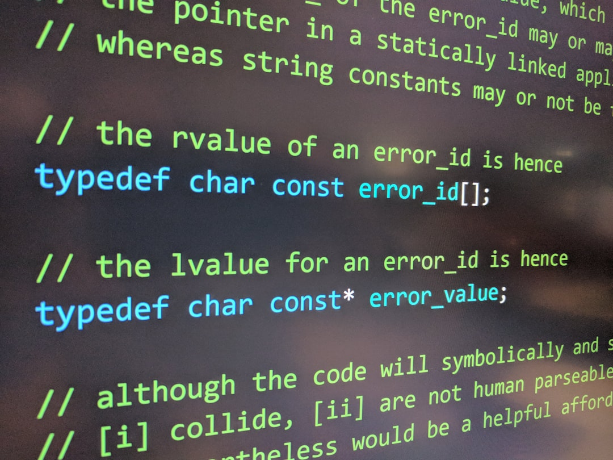
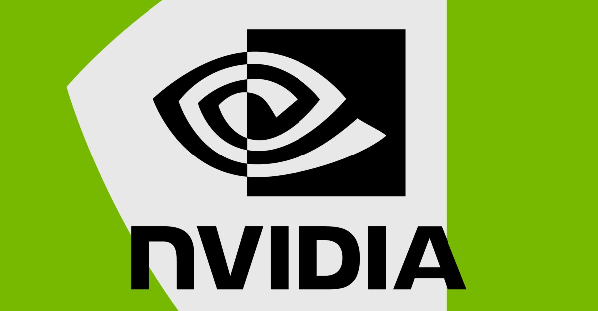

AI DAILY
AI 行业日报
2026年3月3日 · 精选 10 条
01AI行业
OpenAI签军方协议，ChatGPT卸载量单日暴涨295%
2月28日（周六），OpenAI与美国国防部（DoD）达成合作协议后，ChatGPT移动端美国卸载量单日环比激增295%，远超过去30天平均9%的日卸载率。同日，ChatGPT美区下载量下降13%，1星差评数量暴增775%，5星好评减少50%。数据来源：市场情报机构Sensor Tower。
与此同时，竞争对手Anthropic的Claude因公开拒绝军方合作（以AI可能被用于监控美国公民及完全自主武器为由划定红线），2月27日美区下载量环比增长37%，2月28日进一步增长51%，并登上美区App Store免费榜第1名——较2月22日上升了超过20个名次。Appfigures数据显示，周六Claude日下载量首次超越ChatGPT。
INSIGHT
295%的卸载量和775%的1星差评，说明用户把AI公司的客户选择当作了投票依据。Claude因拒绝军方合作登顶App Store，这不是技术竞争——是价值观竞争开始影响市场份额。
02AI工具
AI编程工具Cursor年化营收突破20亿美元

据彭博社消息，AI编程助手Cursor年化营收（最新月收入×12）已突破20亿美元，且过去3个月内营收运行速率翻倍。此前有Twitter热帖质疑Cursor增长势头放缓，称有大量开发者转投Anthropic的Claude Code，此次披露被视为对该质疑的直接回应。
Cursor成立于2022年，目前企业客户占总收入约60%，高于过去以个人开发者为主的格局。部分个人开发者和小型初创公司已流向定价更具竞争力的Claude Code，但企业大客户留存率更高。Cursor最新估值为293亿美元，去年11月完成由Accel和Coatue联合领投的23亿美元融资。
INSIGHT
4年做到20亿美元ARR，过去3个月翻倍——AI编程工具的增长曲线比SaaS陡得多。企业客户占比60%意味着Cursor的护城河不在个人开发者，而在团队级工作流锁定。
03模型发布
阿里9B小模型在多项基准上超越OpenAI 120B开源模型
阿里巴巴Qwen团队发布Qwen3.5小模型系列，含0.8B、2B、4B、9B四款。其中旗舰款Qwen3.5-9B在多项第三方基准测试中超过体积大13.5倍的OpenAI开源模型gpt-oss-120B，具体包括多语言知识和研究生级推理任务。所有模型权重已在Hugging Face和ModelScope上以Apache 2.0协议开源。
Qwen3.5系列采用混合高效架构，将门控差分网络（线性注意力）与稀疏MoE相结合，解决小模型的"内存墙"瓶颈。4B和9B款原生支持多模态（早期融合训练），在视觉推理基准MMMU-Pro上，Qwen3.5-9B得分70.1，超越Gemini 2.5 Flash-Lite（59.7），可在普通笔记本电脑上运行。
INSIGHT
9B参数打赢120B，体积差13.5倍。Qwen3.5用混合架构（门控差分网络+稀疏MoE）绕过了"内存墙"——这对端侧部署意味着，笔记本电脑跑出服务器级性能不再是概念验证。
04AI政策
美国最高法院拒绝受理：AI生成艺术作品不受版权保护
美国最高法院周一拒绝受理计算机科学家Stephen Thaler提起的上诉，维持了联邦上诉法院2025年的裁定：AI生成的艺术作品不受版权法保护，因为版权保护的基本要求是"人类作者身份"。该案源于Thaler在2019年申请为其AI系统创作的图像《天堂近入口》申请版权遭拒。
此前，美国版权局2022年复审后认定该图像不含"人类作者身份"，2023年联邦地区法官Beryl Howell裁定"人类作者身份是版权的基石要求"，2025年联邦上诉法院维持原判。最高法院此次拒绝受理意味着该判决正式生效，AI系统生成的内容在美国将无法单独获得版权保护。
INSIGHT
最高法院拒绝受理=判决正式生效。"人类作者身份"成为版权保护的硬性前提，AI生成内容在美国进入公共领域。对AI创作工具来说，商业模式需要从"卖作品"转向"卖工具和流程"。
05AI基础设施
英伟达40亿美元押注光子技术，为AI数据中心提速

英伟达宣布分别向Lumentum和Coherent各投资20亿美元（共40亿美元），两家公司均专注于数据中心光子技术，包括光收发器、光路交换机和激光器。协议为多年期非独家合作，包含"数十亿美元采购承诺及未来产能准入权"，以及支持双方扩大研发和制造规模。
光子技术相比铜缆可支持更高带宽、更低延迟，且能耗更低，被视为应对AI数据中心日益增长的带宽需求的关键方案。英伟达此举延续其2020年收购网络硬件公司Mellanox以强化NVLink的策略。DARPA上月已发出光子计算研究提案征集，AMD去年也收购了硅光子初创公司Enosemi。
INSIGHT
40亿美元分投两家光子公司，和2020年收购Mellanox（69亿美元）一脉相承——英伟达的战略不只是造更快的GPU，而是把数据中心内部的数据传输也锁进自己的生态。光子替代铜缆，用光速换算力。
06产品更新
Claude记忆功能向免费用户开放，支持从ChatGPT一键迁移
Anthropic宣布将Claude的记忆功能向免费用户开放（此前仅限付费订阅），同时推出新的记忆导入工具，允许用户将ChatGPT或Gemini积累的个人数据和偏好设置迁移至Claude。用户需将预设提示词粘贴至原AI平台，再将输出内容复制到Claude的导入工具中完成迁移。
记忆导入/导出功能自去年10月起已在Claude提供，此次更新重点是扩大用户覆盖范围并优化迁移流程。Anthropic称此举背景为Claude近期用户量激增——Claude Code、Claude Cowork等工具带动增长，上月发布的Opus 4.6和Sonnet 4.6模型在编程和复杂任务处理上表现更优，加上拒绝与五角大楼合作事件带来的关注热度。
INSIGHT
记忆功能免费+迁移工具，时机选在ChatGPT用户流失潮。Anthropic在做的不是功能追赶，是降低迁移成本——让"试试Claude"变成"搬过来用Claude"，从试用转为留存。
07AI政策
OpenAI与五角大楼的"折中"协议，正是Anthropic最担心的结果
2月28日，OpenAI宣布与美国军方达成协议，允许军方在机密环境中使用其技术。CEO Sam Altman承认谈判"相当仓促"，并表示协议中明确禁止将AI用于自主武器和大规模国内监控。Altman称，与Anthropic不同，OpenAI选择引用现行法律条款而非在合同中设定特定禁令。
乔治华盛顿大学政府采购法律学者Jessica Tillipman指出，OpenAI公布的合同摘录"未赋予OpenAI类似Anthropic的独立禁止权"，仅表明五角大楼不得以违反现行法律的方式使用其技术。批评者认为，依赖联邦机构不违法的假设，对于担忧AI启用自主武器或大规模监控的人而言毫无保障。
INSIGHT
OpenAI的合同写的是"不得违反现行法律"，Anthropic写的是"明确禁止特定用途"。区别在于：前者假设政府不会违法，后者不做这个假设。合同条款的措辞差异，就是AI安全承诺的实际边界。
08AI商业
Stripe新功能：帮AI创业公司在token成本上自动加价牟利
Stripe周一发布新计费功能预览，允许AI创业公司在向终端用户收取AI模型使用费时，自动叠加利润率加成。例如，公司可设定在LLM token成本之上统一加收30%的利润，系统自动追踪各模型API价格、记录用户token消耗并完成加价计算，无需手动核算。
该功能同时支持Stripe自有AI网关及Vercel、OpenRouter等第三方网关。对于Agent型AI产品而言，用户使用越多、token消耗越高，定价策略的重要性越突出。竞品OpenRouter目前对其首档方案收取token费用5.5%的统一加价，并提供预算管控功能。Stripe此功能让创业公司可以灵活设定不同客户的加价比例。
INSIGHT
Agent型产品的token消耗不可预测，成本转嫁是刚需。Stripe切入的不是AI本身，是AI商业化的计量和变现层——谁控制了计费管道，谁就拿到了AI经济的过路费。
09AI产品
德国电信×ElevenLabs：通话中途唤醒AI助手实时翻译
德国电信（Deutsche Telekom）与AI语音公司ElevenLabs合作，在MWC 2026巴塞罗那展会上发布"Magenta AI通话助手"。用户在普通电话通话中说出"Hey Magenta"即可唤醒该助手，无需下载专属App或特定手机型号。功能包括实时语言翻译、查询日历空闲时间、搜索附近地点等，目前仅在德国上线。
与苹果Live Translation、三星同类功能不同，Magenta的定位是硬件和软件无关的通用方案，意在降低跨语言沟通门槛。研究人员对此提出质疑：普通电话通话未加密，引入AI助手将带来数据收集和隐私风险；同时ElevenLabs合成语音对非英语母语口音的识别准确率也存在偏差问题。
INSIGHT
运营商级AI语音助手，不绑定手机品牌，不需要App——这是把AI从应用层下沉到网络层。但普通电话通话未加密，AI接入意味着每通电话都可能被第三方处理，隐私代价还没被充分讨论。
10AI基础设施
AI算力战线北移：北欧50余座数据中心正在建设中
北欧地区（挪威、瑞典、芬兰、丹麦、冰岛）目前有逾50座数据中心正在建设或规划中，是欧洲数据中心容量增速最快的地区（据CBRE咨询公司研究）。OpenAI已宣布在挪威北极圈小镇部署10万块GPU，微软随后跟进；法国AI实验室Mistral签约在瑞典Borlänge租用价值14亿美元的基础设施。
北欧吸引AI数据中心的核心优势是充裕的可再生能源和低廉的电力成本，但欧洲其他地区的能源短缺正在加剧竞争。传统数据中心集中于法兰克福、伦敦、阿姆斯特丹等金融中心，强调低延迟；AI训练工作负载对延迟敏感度低，使得北欧的地理劣势不再成为障碍，"快速接入电网"成为选址的首要条件。
INSIGHT
50+座数据中心涌向北极圈，核心原因不是天气凉快，是电网接入快且便宜。AI训练对延迟不敏感，对电力极度敏感——这正在重写数据中心选址的底层逻辑，从"靠近用户"变成"靠近电源"。
由 Zayen知览 整理 · 构建者视角